Output
My work spans a range of disciplines, covering research, strategy, and the design of brand identities, objects, environments, services and systems.
Systems
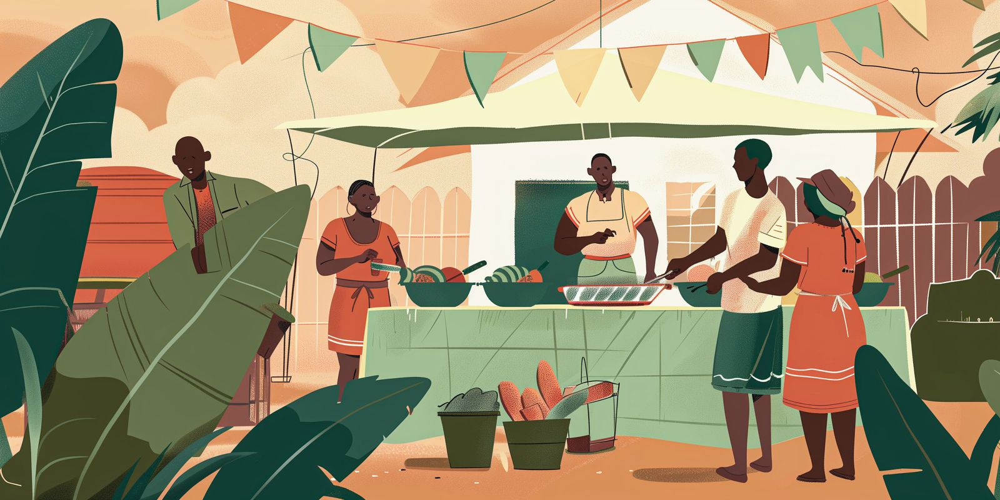
Community Engagement as a Method to Improve Education around food
1 in 4 Americans face food insecurity. While there are multiple efforts to reduce food insecurity, they are often conducted by different stakeholders, and focus on only one part of a complex system.
This project combines systems mapping with behavioral design to try and use community engagement as a way to improve education around food and nutrition, while balancing the needs of various stakeholders within the system.
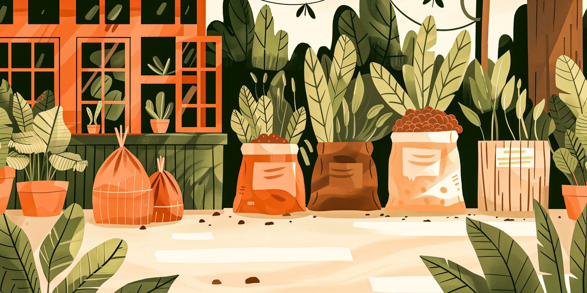
Rethinking Illinois Institute of Technology’s relationship with food waste
IIT houses and feeds thousands of students, and as a result, generates a large amount of food waste. Through 4 systems maps, this project looks at how small shifts in procurement of food, and handling of food waste, can affect not just activities on campus, but have an impact on larger systems in Chicago and Illinois.
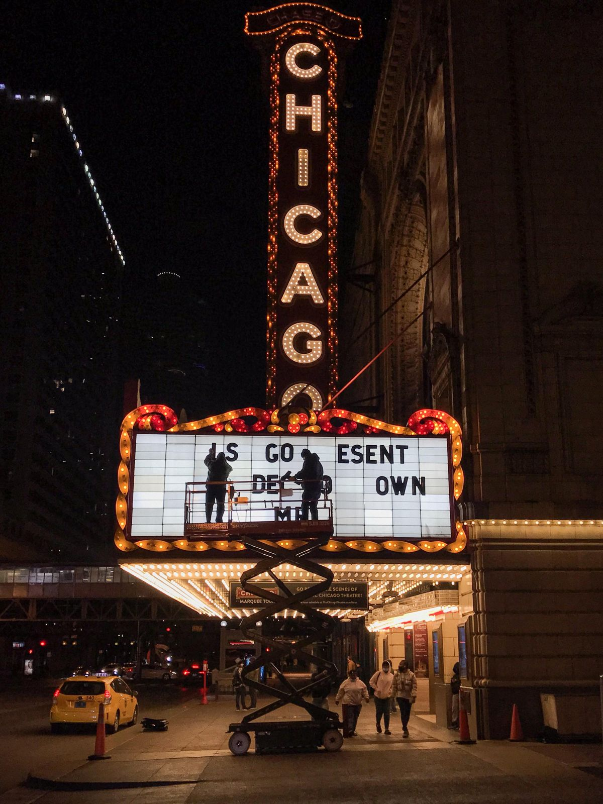
Telling the story of a city and exploring the impact of immigration through data
Chicago is a city of neighborhoods, each of which has a rich history and culture. From the Ukrainian Village to the Polish and Lithuanian Broadways, to the "Black Metropolis" of Bronzeville, immigrants and immigration have played a strong role in shaping the city. This project explores the story of immigration into Chicago by transforming publicly available data into a series of explorable, interactive dashboards.
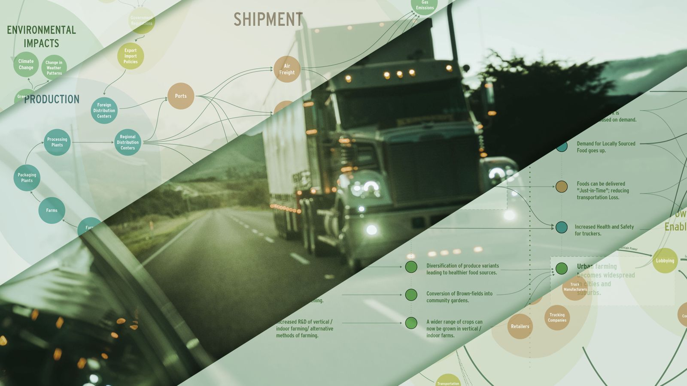
83% of agricultural transportation in America is done by trucks, responsible for 7% of global emissions, a number that’s expected to grow to 15% in the coming years. Any change to make the industry more sustainable is also likely to affect the livelihood of 7.4 million people.
This project analyzes one component of the larger food delivery system, mapping the players and dynamics within the system, and looking at the impact different interventions would have on the system.
Services
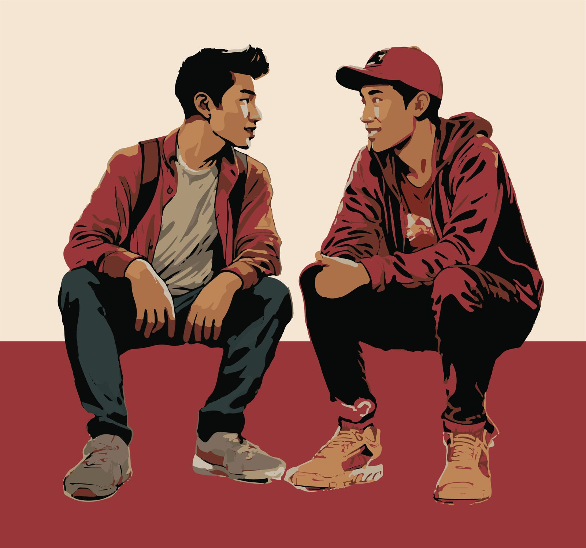
Using a human-centered design approach to redesign UChicago Medicine’s Advance Care Planning process
This project was a collaboration between the Institute of Design’s Equitable Healthcare Action Lab, and UChicago Medicine (UCM), to try and improve the rate of completion of Healthcare Powers of Attorney (HPOAs). While UCM has made efforts in the past to improve the rate of completion of HPOA, most of these have been disparate, with the current rate of HPOA completion far below the national average. By taking a human-centered design approach, we aimed to integrate these interventions into the patients’ journey, and be designed around what patients need at any point in time.
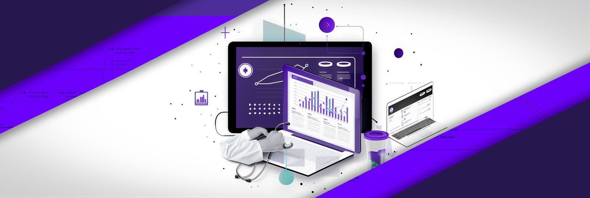
Designing a tiered data governance system for a new clinical research platform
The ADAMS Center is a collaboration between UChicago Medicine and MDClone, with an aim to democratize access to data across the health system. Here the service blueprint served as a boundary object, centering the project around the experience of using the tool, and highlighting potential friction points or areas of oversight. Collaboratively co-creating the service blueprint served to understand the needs of different teams and ensure a balance between data access and HIPAA compliance.
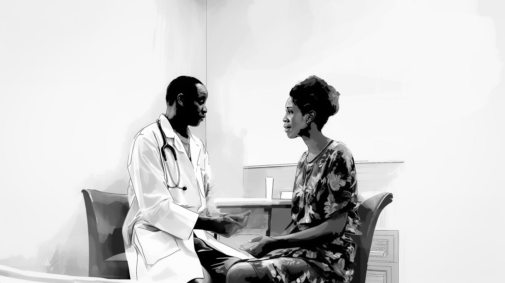
Using a human-centered design approach to educate patients about beta-lactam (penicillin) allergies
As part of a beta-lactam allergy history program at UChicago Medicine, this project developed a patient education tool to clarify penicillin allergies, encourage appropriate allergy testing, and support safe removal of incorrect allergy labels before surgery. In my role as a human-centered design associate, I mapped the patient journey, identified communication gaps, conducted secondary research, and created clear, accessible materials to support patients throughout the process.
Strategy
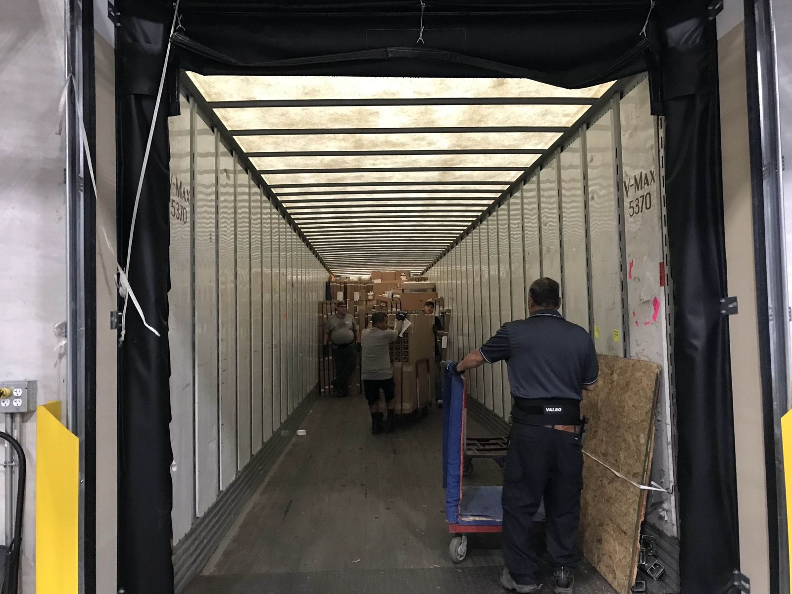
Crafting a business plan for an W/MBE owned, union-aligned furniture installation company
The owners of Forward Space wanted to explore the idea of starting a new, minority owned union installation firm, to ensure that their furniture is installed correctly, while also helping their clients meet their ESG and diversity goals.
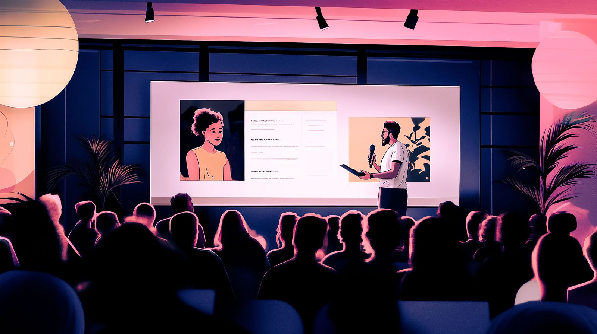
Creating a new organizational model to promote innovation at Peru’s largest financial institution
Credicorp is the leading financial service company in Peru, with a presence in Colombia, Bolivia, Chile, Panama and the United States. But their design team was facing problems in translating the value that design could provide in driving innovation within the organization. For Credicorp to scale, and to achieve their goals of financial inclusivity, they needed a new open innovation model that prioritized design as a dynamic capability within the organization.
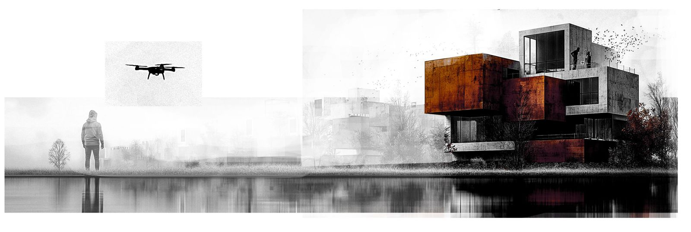
Creating a strategy to get ahead of the curve
Aspect Design, a multi-disciplinary architecture and design firm, sought to expand into different avenues of design and architecture, without diluting the experience they give their clients. This project involved the creation of a digital strategy and business plan to help them achieve their goals.
Research
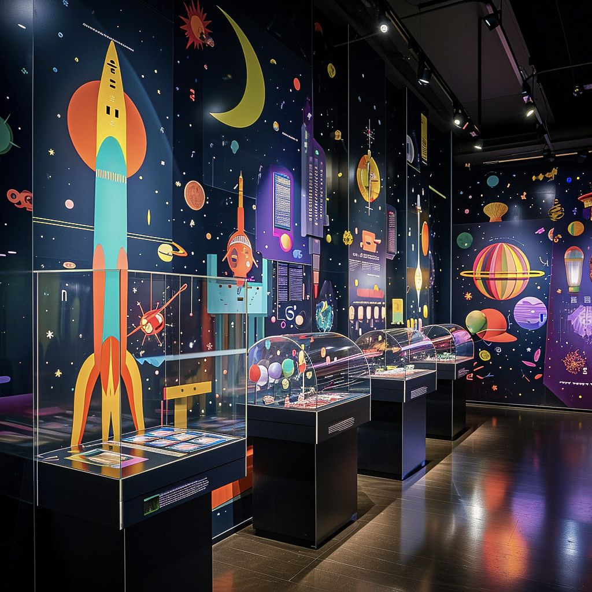
Understanding the parent-child dyad decision making process to improve the museum experience
The Museum of Science and Industry in Chicago has a clear mission to build public understanding of science, show how science impacts our society and inspire everyone to think critically about the world around us. But after the pandemic, the museum faced the challenge of staying relevant as learning and education are increasingly online/digital/virtual. This project used a range of qualitative research techniques to understand the parent-child dyad, and improve the museum experience.
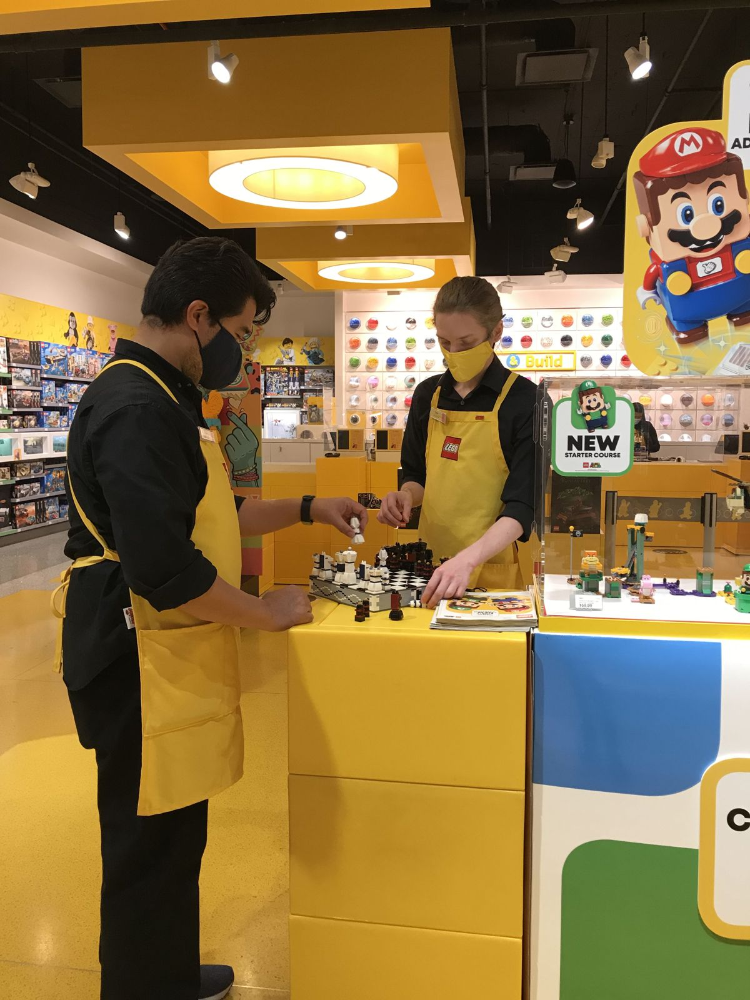
Re-thinking Lego’s ecosystem to suit changing notions of “play”
As part of the Experience Modelling class taught by Mark Micheli at the Institute of Design, Palak Shah and I studied Lego’s brand ecosystem in order to understand which areas are underserved by Lego. Working from previous user research from Kelton, we mapped the Lego ecosystem, studied different customer personas and mental models, and redefined the ecosystem and brand architecture based on the needs of individual mental models, and insights from our research.
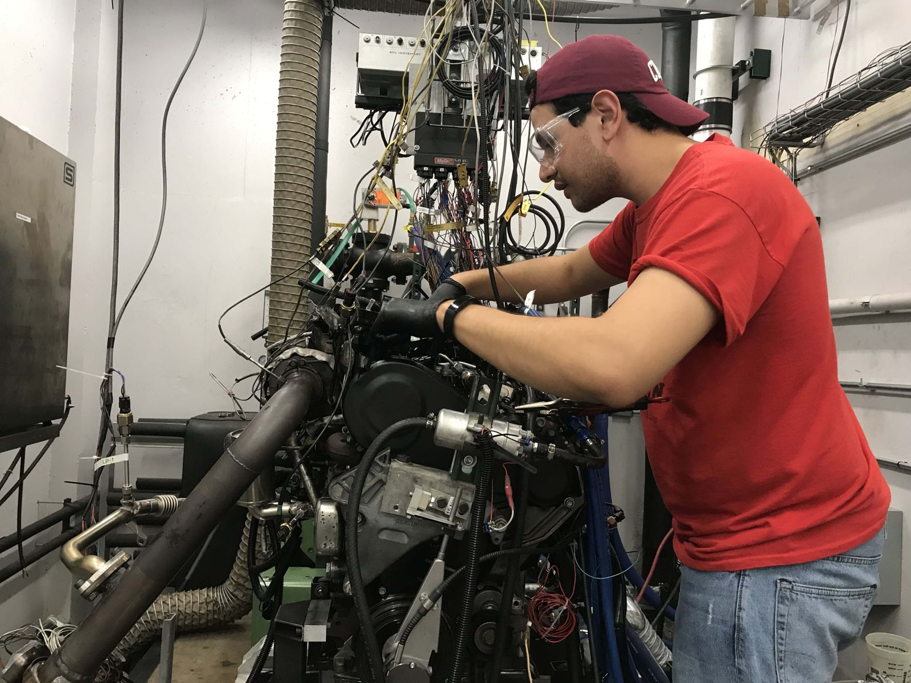
Understanding work culture to enhance learning experiences
A multi-method qualitative study of a small engineering research lab, examining how knowledge transfers (or doesn't) between students, how physical space affects collaboration, and what COVID revealed about the fragility of informal institutional culture.
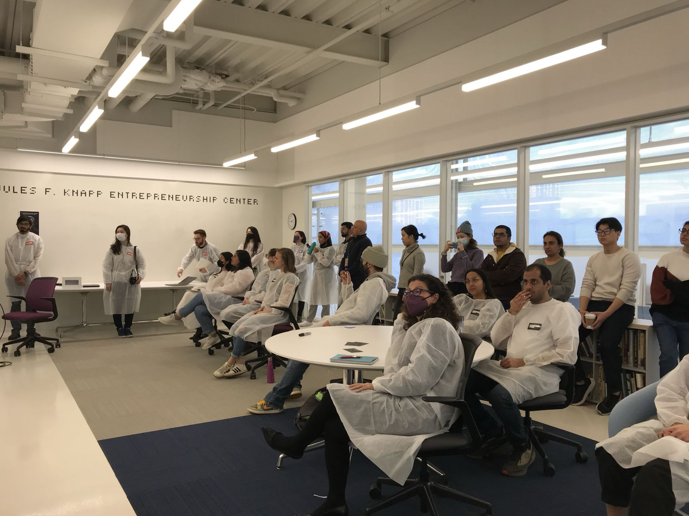
Exploring the implications of a post-truth world through an experiential engagement
What does the future of truth look like, in a post-truth world? This question forms the basis of an experiential future engagement, intended to show how simple decisions on what is true or what is false can stack on top of each other and lead to large-scale unforeseen consequences. This also showed how the amount of information that people are presented with can overload the senses, and can be easily manipulated to drive a narrative.
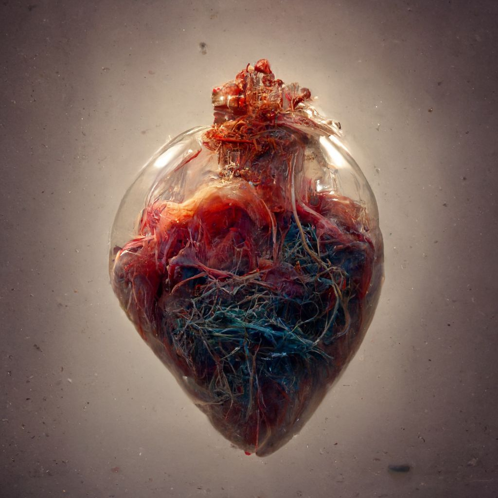
Exploring Xenotransplantation through speculative objects
Currently ten patients die each day in the United States while on the waiting list to receive lifesaving vital organ transplants. Transplantation using non-human sources, including animals and lab-grown organs, has the potential to save thousands, but brings with it a slew of ethical implications. This project uses a set of speculative objects to open up conversations about the benefits and implications of xenotransplantation.
Environments
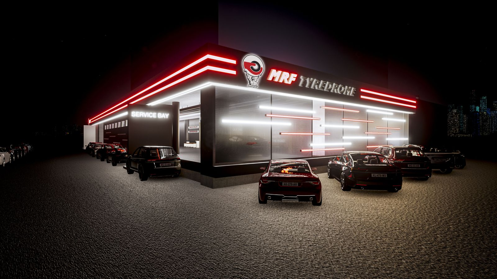
How do we turn a mundane act into an automotive experience?
MRF is the 6th largest tyre manufacturer in the world, with a wide range of offerings, and a storied association with motorsports and cricket.
For their new Tyredrome car and motorcycle service center in the heart of Mumbai, they wanted a new design that would provide a better experience for customers, while also reflecting their history and growth as a brand.
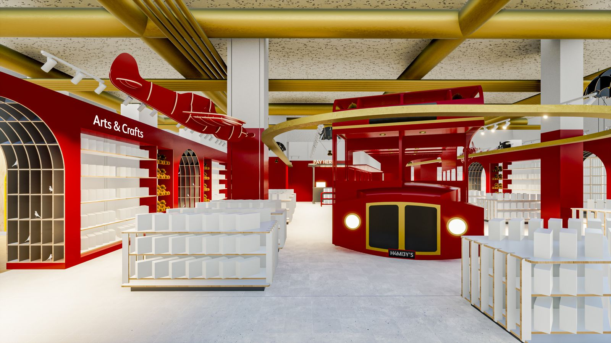
A toy store for everyone’s inner 6-year-old
Noah’s is a chain of British toy shops with a long and storied history. But with internet and e-commerce providing stiff competition to traditional stores, the role of the toy store needed to change. The physical space needed to provide a unique shopping experience that was both distinct from, and complementary to, the
online store.
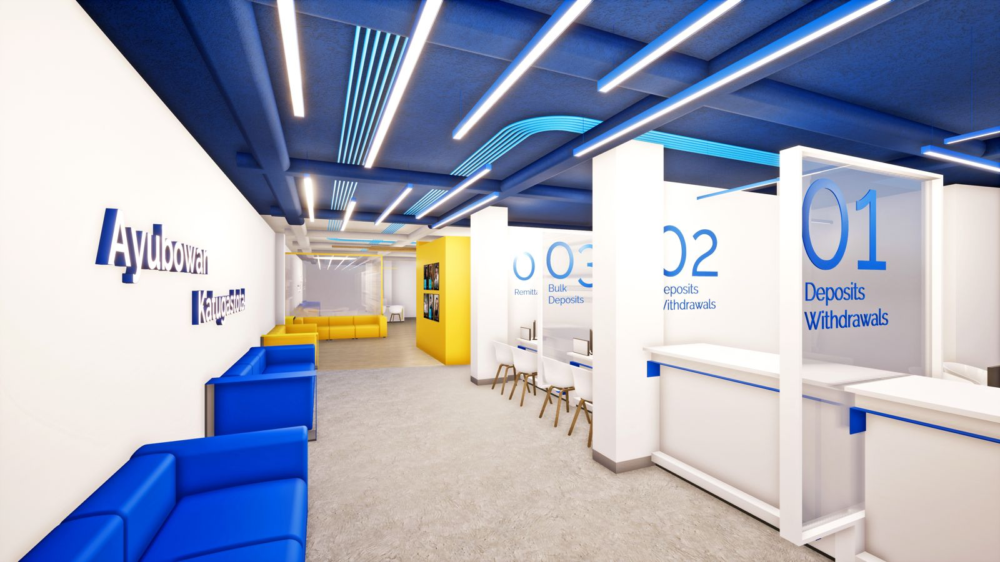
The “No-Wait” Banking Experience
What role should a physical space play in the bank of the 21st century? That’s what Hatton National Bank, a 140-year-old bank in Sri Lanka, wanted to answer. Through a combination of user research, secondary research and retail experience design, I revamped their current branches to ensure relevance and improve the customer experience.
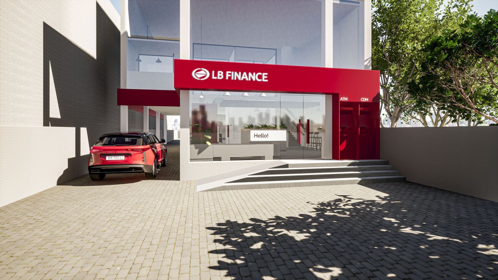
How can a space reflect a promise?
The redesign of LB Finance’s bank branches was intended to reflect the brand’s new promise of “Opportunities Unlimited”, with an open plan layout and architecture, furniture designs, and materials inspired by the tropical modernist style of Sri Lanka.
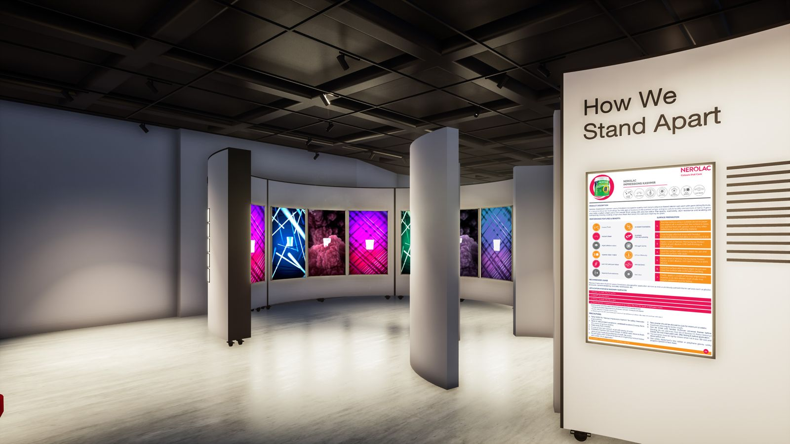
A space that reflects endless possibilities
In 2020, Nerolac would be celebrating its 100th anniversary, and sought to revamp its image, and trusted Interbrand Mumbai with the project. A large part of the rebrand included the development of a new Experience Center, to showcase the brand’s offerings, as well as new developments, technology and initiatives.
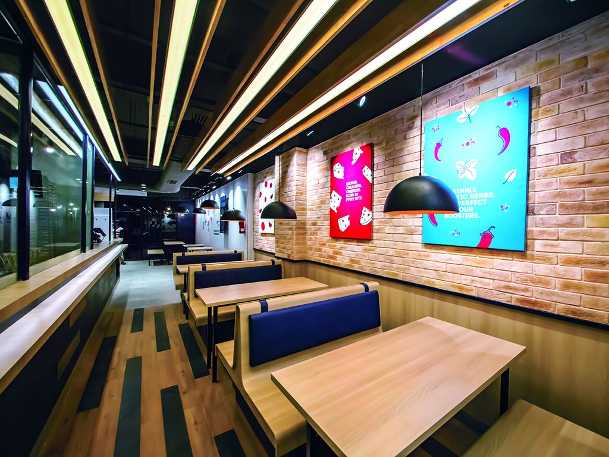
Crafting a dine-in experience for the pizza delivery experts
Domino’s Pizza is one of the largest fast-food chains in India with over 1,200 outlets. But they’re known more for their “30 minutes or free” delivery than their dine-in experience. As part of a team at FITCH, we redesigned the space, optimized the kitchen layout and set the template for a full revamp of all 1200 of their restaurants.
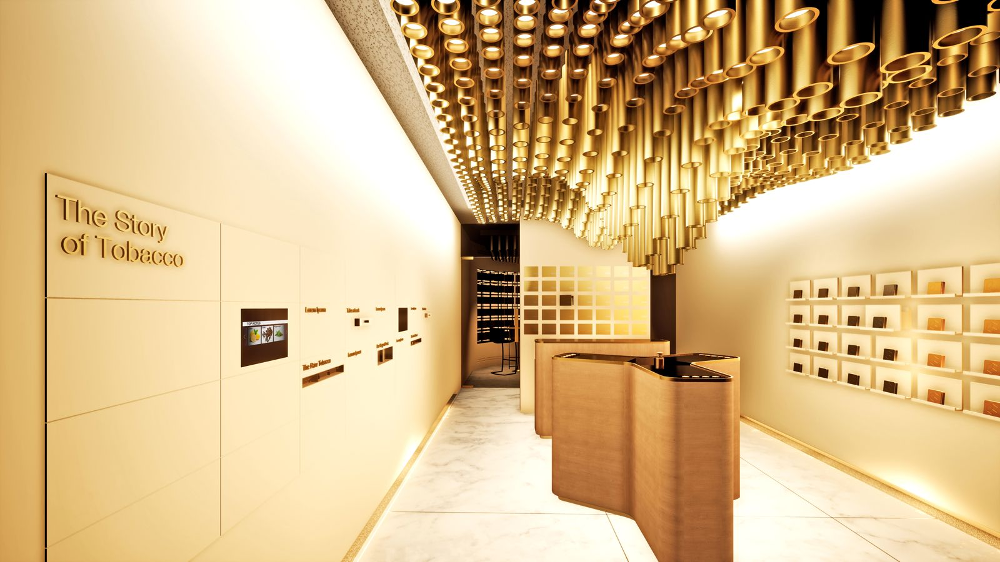
How do we make a truly bespoke tobacco experience?
A major tobacco producer wanted to create a new, unique, premium tobacco store. The goal was to highlight their top brands, while also educating customers about the intricacies of tobacco, and what makes these blends unique. The result was Taste Expressions, a store that showcases what goes into making a cigarette, and allows customers to try their hand at creating their own unique blend.
Identities
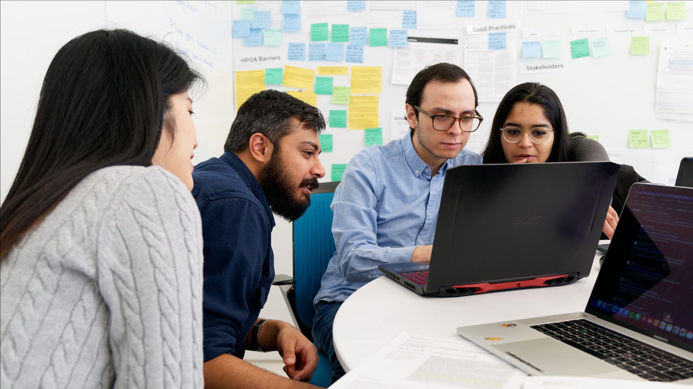
Creating a new visual identity for a growing lab
The Equitable Healthcare Action Lab at the Institute of Design at Illinois Tech partners with health systems, community organizations, and researchers to develop inclusive healthcare strategies and solutions.
As a student assistant working with Prof. Kim Erwin, I was brought in to address a practical problem: the lab had accumulated years of research across multiple projects, and the physical space had become difficult to navigate and present to outside collaborators. My role covered the full scope: developing a visual identity, designing a template system for displaying research, selecting physical materials for the space, setting up the new lab, and creating operational tools to support how the lab takes on and evaluates projects.
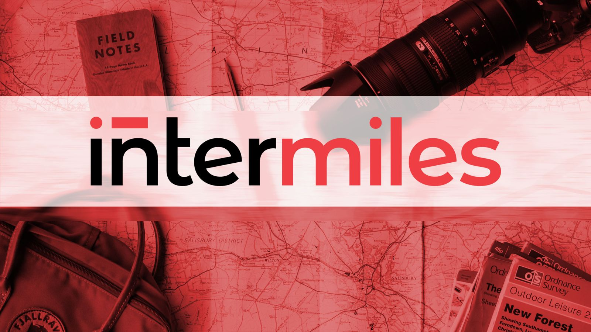
Can an airmiles brand represent more than just travel?
Jet Privilege was India's largest loyalty programme, built as a subsidiary of Jet Airways. When the airline collapsed in 2019, Jet Privilege found itself needing to move quickly; the association with a failed airline was an existential problem for a brand asking customers to accumulate and trust in its currency.
They approached Interbrand to rename and reposition the programme as a standalone rewards brand, one that wasn't defined by air travel and could survive, and grow, independently of any single airline.
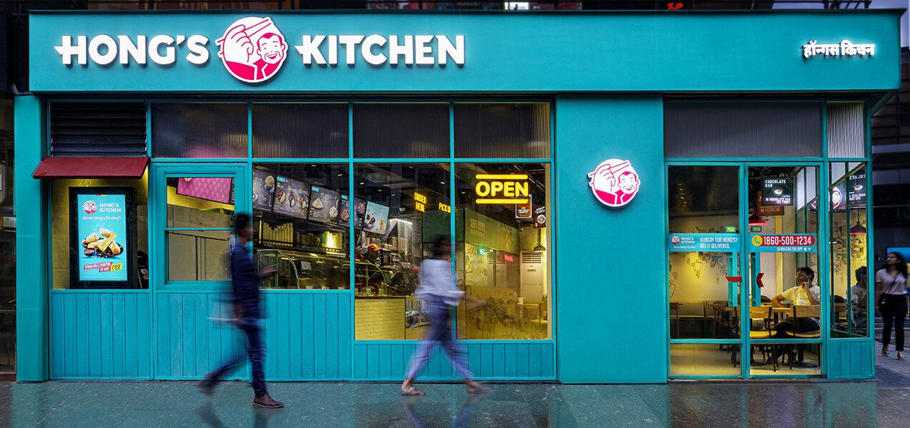
Can a name evoke emotion without straying into cultural stereotypes?
Jubilant Foodworks had built extraordinary success with their Domino's Pizza franchises across India and were looking to replicate that QSR model for an Asian food concept. They approached FITCH to create the brand from scratch: name, identity, and interior experience.
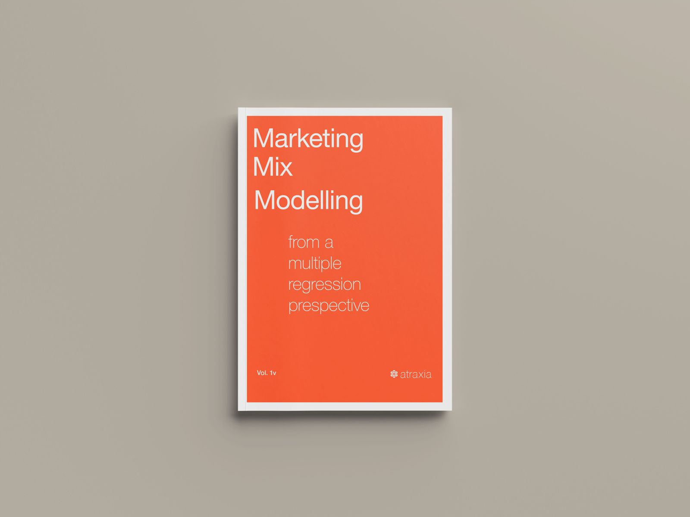
Creating the brand identity for a marketing consultancy
Atraxia is a marketing consultancy in southern India that provides a competitive, cost-effective Marketing Mix Modelling (MMM) solution for small and mid-sized companies. The new consultancy aimed to stand out by tailoring their solution to smaller companies, and pairing the MMM with other bespoke solutions and marketing consulting. To reflect the founders’ decades of experience in the field, they sought a name and brand identity to match.
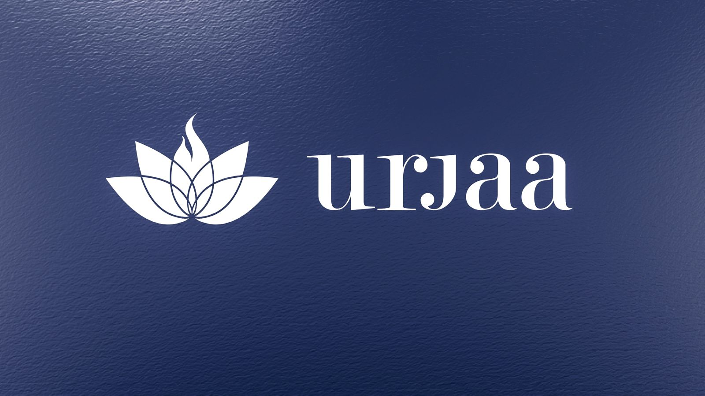
A brand identity that conveys culture and values
Urjaa is a retail consultancy that helps small, family-owned businesses maximize their profit margins. They wanted a brand identity that balanced strength and formality, with approachability.
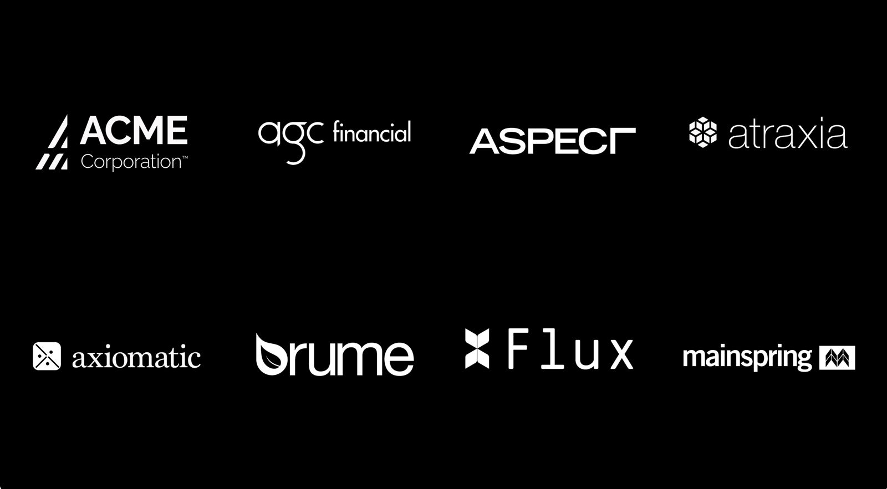
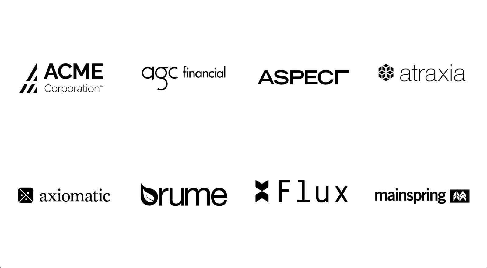
Some of these are live in the world. Some were made for teaching cases or speculative projects. All of them started with the same question: what does this need to say, and what's the simplest way to say it?
Objects
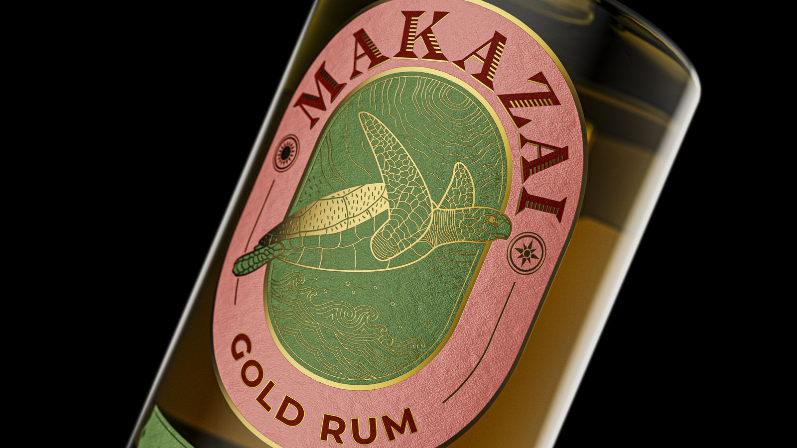
Can the shape of a bottle help a brand stand out in a crowded category?
Makazai is a rum from the coastal Indian state of Goa. A new brand entering a crowded category, it needed an identity strong enough to stand out on shelf and carry the character of the place it comes from.
The owners approached Popping Mustard to develop the brand. I worked with Bidisha on the bottle design and 3D visualization of the final labels. I also designed a range of Point-of-Sale solutions which built on the brand identity.
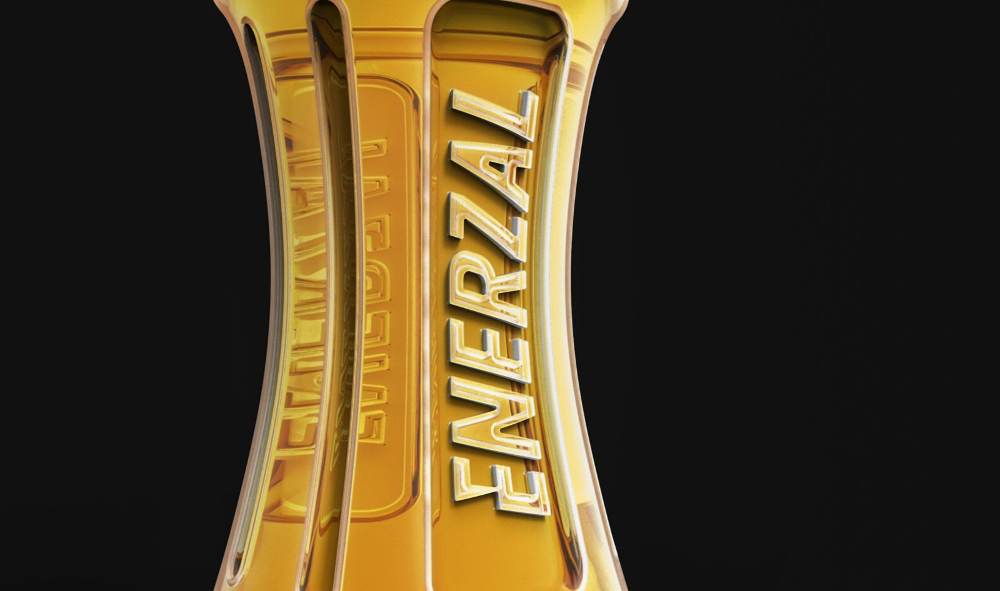
Can a bottle look sporty, but still have a wide appeal?
Enerzal was a new sports drink from FDC, a company best known for Electral, their oral rehydration powder, taken when sick. The challenge was to move convincingly into the sports drink category without carrying the clinical associations of the parent brand.
FITCH worked on the new brand identity, and I was tasked with designing the bottle.
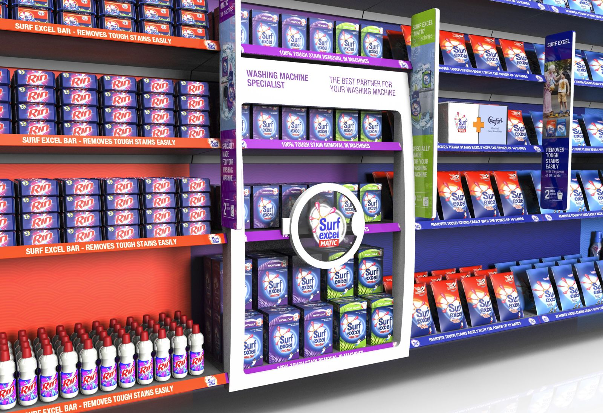
Re-imagining the supermarket detergent aisle
Hindustan Unilever had a category problem. Indian customers were accustomed to a single-product approach to laundry: one detergent, job done. HUL had strong products across the category: Surf Excel for hand washing, a separate formulation for machine washing, and Comfort fabric conditioner. But customers weren't connecting the dots.
They approached FITCH to design a shelf experience that would make that case.
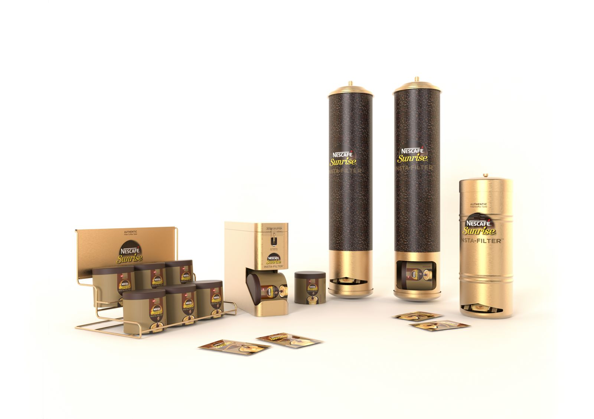
Capturing the South Indian Coffee Ritual
Nestlé wanted to increase awareness of their Nescafe Sunrise Insta-filter variety of instant coffee. Primarily marketed to South Indian customers, Insta-filter promises the taste of traditional filter coffee, with the convenience of instant coffee.
The goal was to create a range of point-of-sale solutions that would stand out from regular instant coffee packs on a supermarket shelf, by incorporating cues of the coffee making ritual.
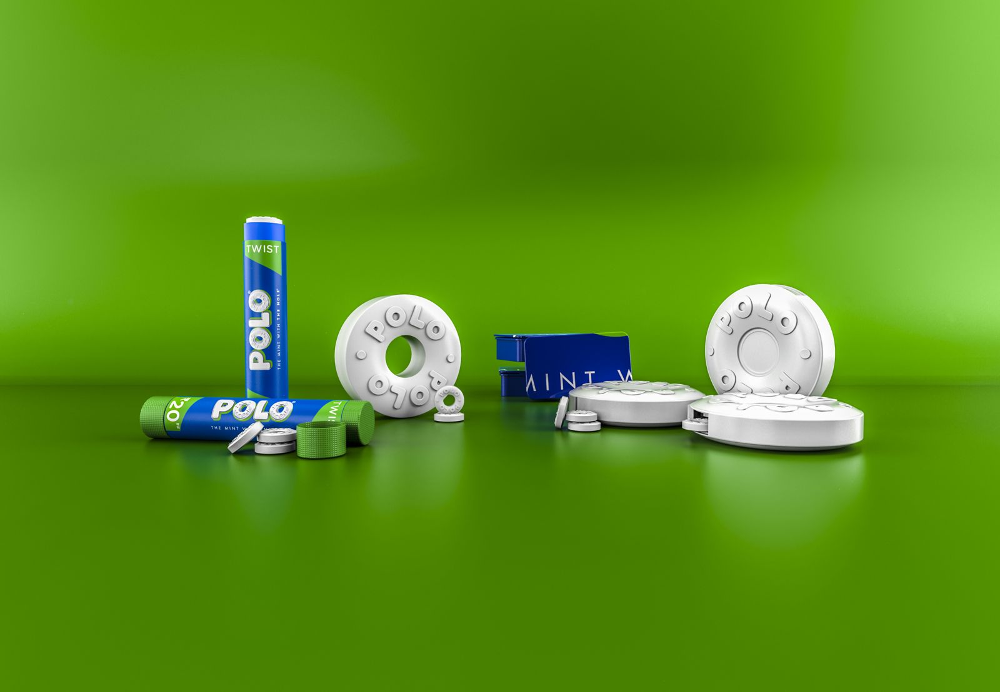
How do we change an iconic package without losing what makes the brand distinct?
Polo - "The Mint with the Hole" - is one of Nestlé's most recognizable confectionery brands. The hole isn't just a product feature; it's the entire personality. When Nestle approached FITCH to develop a more premium pack, the challenge was finding ways to feel new without losing the playfulness and iconicity that made the brand.
Working as the industrial designer on the project, I developed a range of packaging concepts that played with the brand's existing visual language - the shape, the existing pack, the quirky tone - while exploring different formats, materials, and mechanisms. All concepts were modeled in Rhino and rendered in KeyShot.
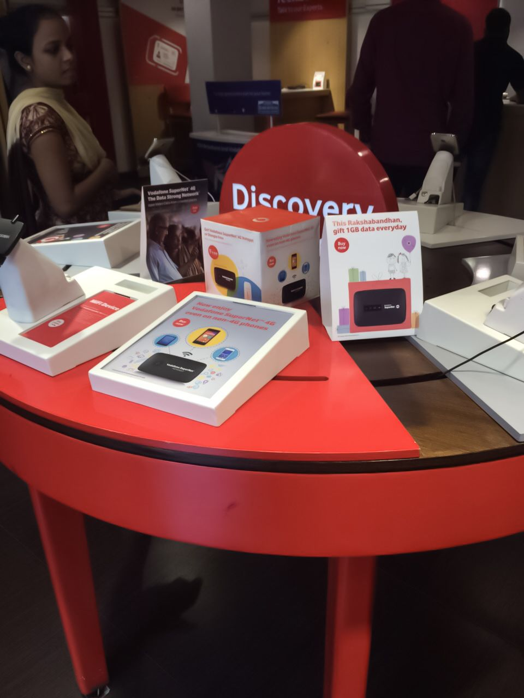
Redesigning Vodafone’s iconic Top 10 Table
The Top 10 Table was a cornerstone of Vodafone's retail experience: a fixture that drew customers in to try the latest devices and gave staff a natural opening for conversation. It was well established, well recognized, and well liked.
The problem was that Vodafone was shifting its focus from selling physical devices to selling services. The table needed to reflect that change, without being replaced entirely. As the industrial designer on the team at FITCH Mumbai, I was tasked with updating the fixture to reflect Vodafone's new direction, working within the existing retail design language and minimizing the rework of current installations.
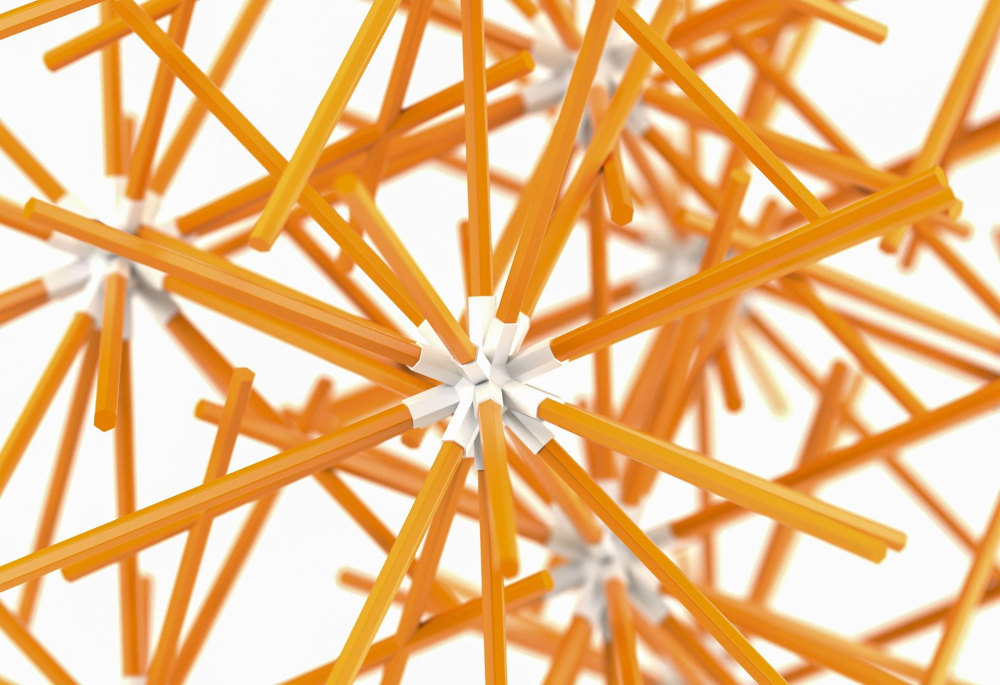
How do we make pencils fun in a digital world?
Hindustan Pencils is a ubiquitous stationery brand in India — every child has used their distinctive red-and-black hexagonal pencils at some point. Facing competition from newer, bolder competitors, the brand was looking to refresh its identity and find new ways to engage customers.
As part of that effort, I designed a modular pencil holder that could work as a desk toy, a collectible, or the building block of a larger shop display or installation — all built around the pencil's own hexagonal form.
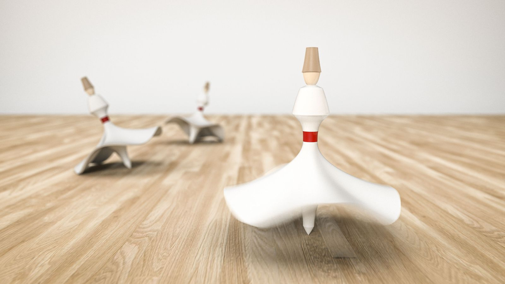
A spinning top inspired by the Sufi dancers of Turkey
A children's toy born out of a sketching exercise during my undergraduate studies. The whirling dervish dancers of Turkey have a distinctive silhouette, the wide, spinning skirt, that immediately suggested the form of a traditional spinning top. I wanted to see how directly that translation could be made.